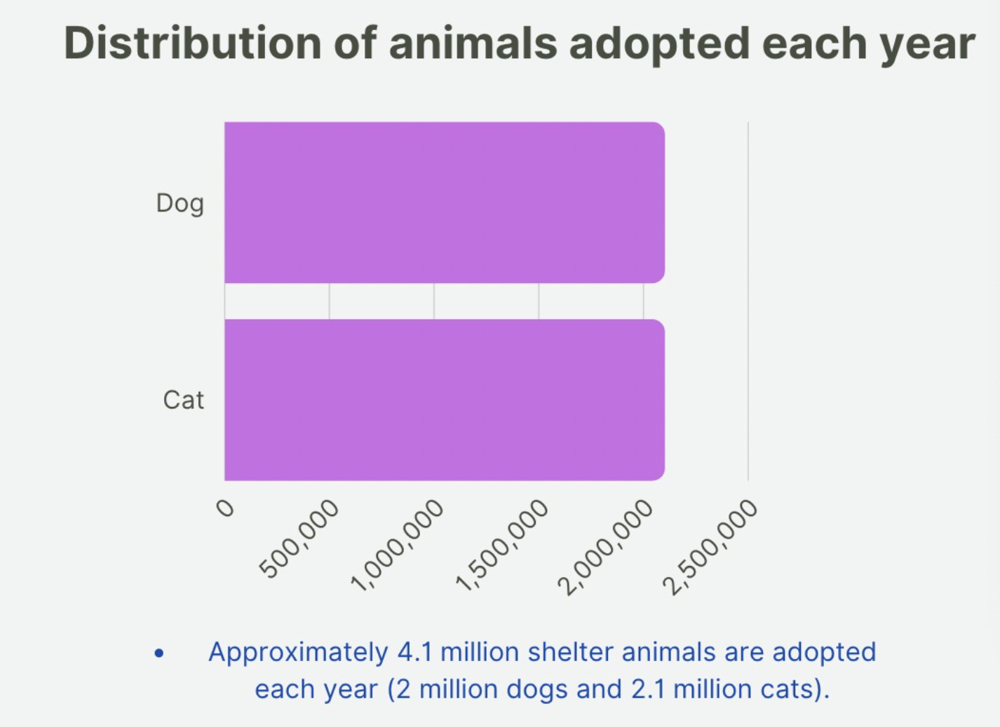
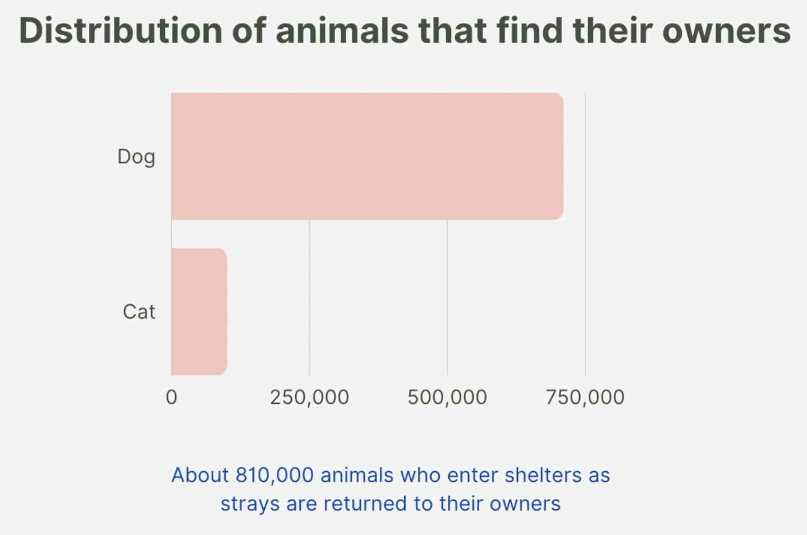
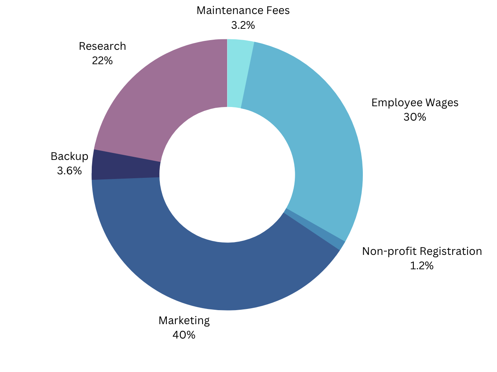

◉ Animal Crossing is a caring and responsible organization, aiming to help you find a pet that suits you best. We are trying to provide a cherishable experience for both the first-time pet owners and our four paws friends. Don’t know that kind of animal that fits you? Want to adopt or foster animals? Animal Crossing is here to help!
◉ Our primary target audience are first- time pet owners who have little knowledge and experience about raising and training pets. Our secondary target audience are people looking for animals to adopt or foster. Through the quick test, we will have a basic understanding of adopters, then AI is used for intelligent matching with suitable dog or cat breeds as well as other suggestions which include the information of the certain breeds.


1.Profitability: For financial gain (racing, breeding), or even for recreation (hunting, fighting), people use companion animals. Animals that are too slow, old, or ill are no longer suitable for their "purpose" and are discarded(2013).
2.Financial Factor: Because their owner can no longer afford to care for them, pets are frequently abandoned. Many pet owners are unaware of the total cost of owning and caring for a pet.
3.Animal Health and Age: Animals can develop acute or chronic illnesses, and they may require more care as they age due to medical issues that are age-related. This takes up more of the owner's time and could cost money for the veterinarian.
4.Lack of experience: Some pet owners lack the knowledge necessary to properly care for their animals and may consequently feel overburdened by their obligations.
5.Behavioral Issues: Some pet owners discover that their animal exhibits undesirable behavior, such as dogs acting aggressively toward other dogs. When animals are young, they should be properly trained and socialized to help prevent the development of behavioral problems. According to the ASPCA’s National Rehoming Survey, pet problems are the most common reason that owners rehome their pet, accounting for 47% of rehomed dogs and 42% of rehomed cats. Pet problems were defined as problematic behaviors, aggressive behaviors, grew larger than expected, or health problems the owner couldn’t handle.
After completing the above research on why people abandon small animals, we research on the organization of animal shelters from Pet Statistics, including comparing the number of animals that enter the US animal shelters nationwide every year, and how many animals of the animal shelters find their owners or adopters. Pet statistics. ASPCA. (n.d.). Retrieved April 18, 2023, from https://www.aspca.org/helping-people-pets/shelter-intake-and-surrender/pet-statistics
 Approximately 6.3 million companion animals enter U.S. animal shelters nationwide every year. Each year, approximately 920,000 shelter animals are euthanized
We have $50000 budget in total. Animal Crossing organization is a non-profit organization, so when considering the budget for our event, our main budget is to pay our five employees who participated in the entire proposal and web app design. We will put the second largest budget on research, such as why people give up pets. Next, after completing the initial investment, we will also put the budget into promotion to let more people who love small animals understand our organization and find suitable cute pets on our website.
©2023 by DMST101 Group#1